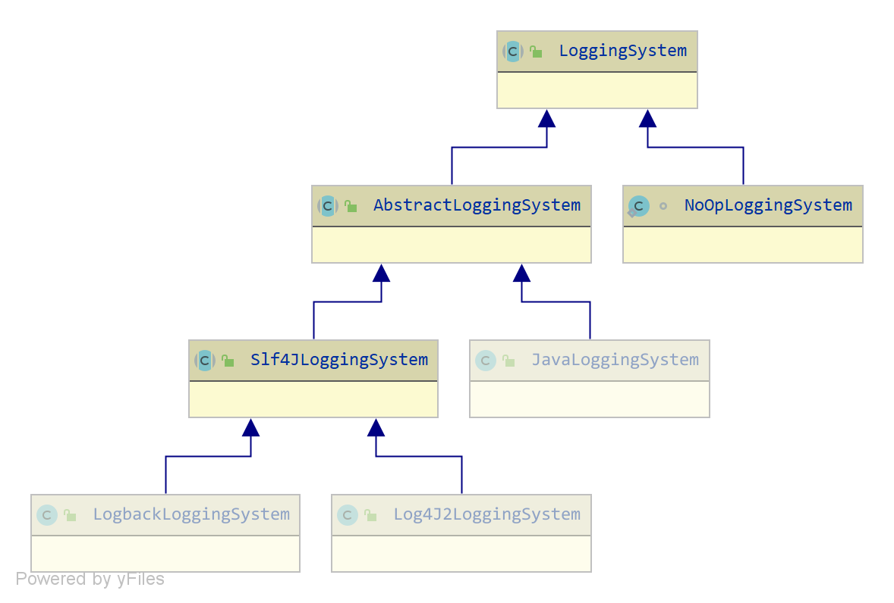

SpringBoot日志体系
使用 Commons Logging 进行所有内部日志记录(日志接口)，但将底层日志实现保持开放状态。 为 Java Util Logging、Log4j2 和 Logback 提供了默认配置
内部日志接口
SpringApplication使用的是org.apache.commons.logging.LogFactory
public class SpringApplication {
private static final Log logger = LogFactory.getLog(SpringApplication.class);
protected Log getApplicationLog() {
if (this.mainApplicationClass == null) {
return logger;
}
return LogFactory.getLog(this.mainApplicationClass);
}
}
日志实现配置
LoggingApplicationListener监听AppicationEvent进行日志初始化
public class LoggingApplicationListener implements GenericApplicationListener {
private void onApplicationStartingEvent(ApplicationStartingEvent event) {
this.loggingSystem = LoggingSystem
.get(event.getSpringApplication().getClassLoader());
this.loggingSystem.beforeInitialize();
}
private void onApplicationEnvironmentPreparedEvent(
ApplicationEnvironmentPreparedEvent event) {
if (this.loggingSystem == null) {
this.loggingSystem = LoggingSystem
.get(event.getSpringApplication().getClassLoader());
}
initialize(event.getEnvironment(), event.getSpringApplication().getClassLoader());
}
}
LoggingSystem的静态Map常量SYSTEMS定义了使用日志的顺序logback > log4j2 > java logging
public abstract class LoggingSystem {
private static final Map<String, String> SYSTEMS;
static {
Map<String, String> systems = new LinkedHashMap<>();
systems.put("ch.qos.logback.core.Appender",
"org.springframework.boot.logging.logback.LogbackLoggingSystem");
systems.put("org.apache.logging.log4j.core.impl.Log4jContextFactory",
"org.springframework.boot.logging.log4j2.Log4J2LoggingSystem");
systems.put("java.util.logging.LogManager",
"org.springframework.boot.logging.java.JavaLoggingSystem");
SYSTEMS = Collections.unmodifiableMap(systems);
}
public static LoggingSystem get(ClassLoader classLoader) {
String loggingSystem = System.getProperty(SYSTEM_PROPERTY);
if (StringUtils.hasLength(loggingSystem)) {
if (NONE.equals(loggingSystem)) {
return new NoOpLoggingSystem();
}
return get(classLoader, loggingSystem);
}
return SYSTEMS.entrySet().stream()
.filter((entry) -> ClassUtils.isPresent(entry.getKey(), classLoader))
.map((entry) -> get(classLoader, entry.getValue())).findFirst()
.orElseThrow(() -> new IllegalStateException(
"No suitable logging system located"));
}
}

spring-boot-starters引入spring-boot-starter-logging，spring-boot-starter-logging引入了logback
<!-- spring-boot-starters -->
<dependency>
<groupId>org.springframework.boot</groupId>
<artifactId>spring-boot-starter-logging</artifactId>
<version>2.1.0.RELEASE</version>
<scope>compile</scope>
</dependency>
<!-- spring-boot-starter-logging -->
<dependency>
<groupId>ch.qos.logback</groupId>
<artifactId>logback-classic</artifactId>
<version>1.2.3</version>
<scope>compile</scope>
</dependency>
总结
- spring boot 按照logback > log4j2 > java logging的顺序查看是否引入对应的日志实现，决定使用哪个LoggingSystem。
- 使用spring-boot-starters的话会引入logback，默认就是logback
- 可以通过系统属性“org.springframework.boot.logging.LoggingSystem"使用自定义日志系统，或者不使用日志(设置值为none)